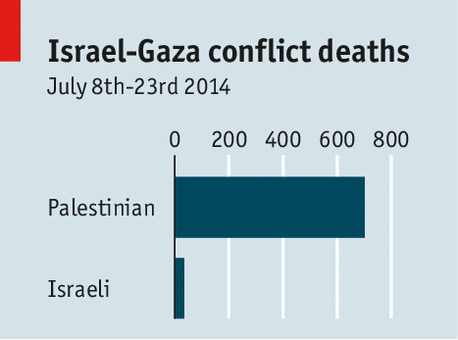

THE mounting toll of innocents in Gaza is reason enough for anyone with compassion to demand a ceasefire. Since July 8th, when Israel began its campaign to clobber Hamas, the Palestinian Islamist movement that has run the Gaza Strip since 2007, at least 700 Palestinians have been killed, most of them civilians and many of them children, along with at least 35 Israelis, including three civilians. After Israel undertook a ground invasion of Gaza on July 18th, the casualty rate on both sides soared. Hospitals have been hit and scores of buildings flattened, often with civilians inside. A Palestinian family of 25, said to have been hosting a Hamas fighter during a supper to break the Ramadan fast, was wiped out. |
加沙更多的无辜者丧命，有足够的理由是任何有恻隐之心的人请求停火。自从6月8日，当以色列开始连续打击哈马斯的行动，从2007年开始的加沙地带巴勒斯坦伊斯兰运动，至少700名巴勒斯坦人丧命，大多数是平民和许多儿童，同时，至少35名以色列人，其中包括3名平民。在以色列在7月18日在加沙开展地面入侵，双方的伤亡率都升高了。医院被攻击，还有许多建筑遗为平地，包括平民在内。一个25名成员的巴勒斯坦家庭，据说在开斋晚餐时有一名哈马斯成员，结果被彻底摧毁。 |
| Yet it would be a grievous mistake to bring about a ceasefire that achieved nothing more than to revert to the status quo. In the longer run, if a more durable peace is to be built, the Israelis must seek a sovereign state for Palestinians, who, including Hamas, must in turn reiterate their support for a government that disavows violence and recognises Israel. Unless a ceasefire is couched in such terms, the poison will in time well up all over again and the cycle of violence will resume, as it has done repeatedly since 2007. | 即使，引起停火是一个严重的错误，除了恢复现状不能获得任何（改善）。从长远来看，如果会建立一个更持久的和平，以色列必须为巴勒斯坦人民探寻建立独立国，包括哈马斯，必须转而重申他们对政府的支持，这个政府不承认暴力并且承认以色列。除非停火是建立在这种情况下，不良思想（战争）迟早再次涌现，暴力的循环又会重新开始，就像从2007年至今这种情况。 |
| Only three months ago talks on a peace deal foundered. Could it be any different this time? One reason to think so is that both sides have seen how that collapse paved the way for a war that neither really wanted and which is now causing higher military casualties than Israel had been expecting. | 仅仅在三个月前，建立了和平谈话的想法。这会和以往任何一次不同吗？这么想的一个原因是两方都看到了战争之路的崩塌，都不想引起比以色列过去期望的更高的军事伤亡率。 |
| The talks broke down chiefly because of Israel, said John Kerry, their sponsor and America's secretary of state. In frustration, Mahmoud Abbas, the Palestinians' moderate leader, formed a unity government that Hamas was persuaded to back. Whereas America cautiously welcomed this development, Binyamin Netanyahu, Israel's prime minister, railed against it, fearing a united Palestinian front. When on June 12th three Israeli students were kidnapped and murdered on the West Bank, Mr Netanyahu instantly blamed the crime on Hamas, which unusually refused to claim responsibility for it, and rounded up at least 500 of the group's members. Its retaliation, the multiplying rocket fire at Israel, led Mr Netanyahu to unleash his assault on Gaza. | 对话很快就破裂了主要因为以色列，他们的支持者、美国国务卿特里这么说。 |
| The Israelis' first stated military aim is the legitimate one of destroying Hamas's stockpile of rockets, thousands of which have been fired indiscriminately—indeed, criminally and foolishly—into Israel in the past decade, killing around a score of Israelis and frightening millions more, as the missiles' range and sophistication have increased. A newer aim, also legitimate, is to destroy Hamas's military infrastructure, especially the tunnels that provide access to Israeli territory in the hope—among other things—of sending in guerrillas to murder Israelis, or kidnap them to barter for Palestinian prisoners in Israeli jails. | |
| But war is about conduct as well as aims. Israel is wrong to hit buildings with no evident military purpose and houses packed with civilians, even if they harbour Hamas fighters or officials and the army gives warnings. It may also be counterproductive. Hamas knows that, as the death toll among its own people rises, it has a better chance to promote its cause. | |
The world's biggest open-air prison To stop the fighting Hamas must promise not to fire its rockets into Israel. But in return Israel should agree to honour an agreement dating to 2012 to lift the siege that has immiserated Gaza's inhabitants since 2007 in an effort to enfeeble Hamas. And it should free, or put on trial, some of the hundreds of Hamas prisoners rounded up in the past month or so on the West Bank, the bigger bit of a would-be Palestinian state. |
|
| But the catastrophe befalling Gaza stems fundamentally from the refusal of Israel to negotiate in good faith to let the Palestinians have a proper state encompassing both Gaza and the West Bank. Mr Netanyahu still allows the building of Jewish settlements there, which makes a workable Palestinian state ever less likely to emerge. | |
| Real mediation must be resumed. Egypt has to be involved, since it shares with Israel the keys to the prison that is Gaza, but its new military rulers hate the Islamists of Hamas as much as Israel does. Turkey and Qatar can help prod Hamas towards moderation but are loathed by Israel. America is still the one actor that has the weight, however diminished, to bring everyone to the table. Though bruised by his previous fruitless efforts, Mr Kerry must do more than just stop the rockets. |